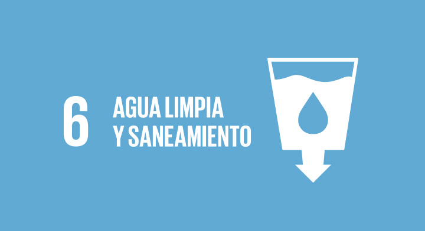

ODS 6: Agua Limpia y Saneamiento
El Objetivo de Desarrollo Sostenible 6 (ODS 6) busca garantizar la disponibilidad de agua y su gestión sostenible, así como el saneamiento para todos. Promueve el acceso universal a agua potable segura, el uso eficiente de los recursos hídricos, la protección de los ecosistemas relacionados con el agua y la mejora de la calidad del agua mediante la reducción de la contaminación.
El ODS 6 es crucial para la salud, el bienestar y el desarrollo sostenible de las comunidades. A través de este objetivo, se busca no solo garantizar el acceso al agua potable y al saneamiento, sino también promover prácticas sostenibles que protejan los recursos hídricos para las generaciones futuras.